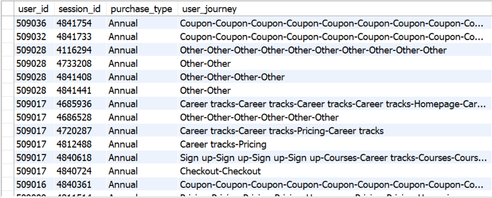

Projects
Click to Conversion: Tracking the Paid User Journey
This SQL-based project investigates the behavioral patterns of users who converted to paid subscriptions during Q1 2023 on an online education platform. By integrating and analyzing large-scale web interaction data (front_interactions), user session logs (front_visitors), and purchase records (student_purchases), I mapped each user's journey from initial site visits to their eventual subscription.
Using SQL, we focused on users who made their first paid purchase within the Q1 2023 timeframe. For this cohort, we reconstructed session paths by concatenating page transitions, effectively visualizing the sequence of pages visited prior to conversion. This process allowed us to identify common user flows and critical conversion pathways.

The results provide insights into which page sequences—such as visits to the "Courses", "Pricing", or "Checkout" pages—most frequently preceded a successful conversion.
Feature Selection and Classification Models for Early Breast Cancer Detection
In this analysis, we used the Breast Cancer Wisconsin dataset to identify relevant features for classification and assess the performance of multiple machine learning models.
Initial exploration revealed that features like texture_mean, radius_mean, and area_mean showed clear separation in medians between malignant and benign tumors, making them informative for classification. Features such as symmetry_mean and fractal_dimension_mean, which lacked distinguishable median differences, were considered non-informative and dropped. A correlation matrix helped identify highly correlated feature groups. To reduce redundancy, only one representative feature was retained from each group (e.g., area_mean from the set ['radius_mean', 'perimeter_mean', 'area_mean']).
Model Training and Evaluation:
Data was split into 80% training and 20% test sets. Three models were trained:- Logistic Regression: Accuracy = 96.49%
- K-Nearest Neighbors (KNN): Accuracy = 94.74%
- Support Vector Classifier (SVC): Accuracy = 96.49%
Click to Conversion: Tracking the Paid User Journey
The results provide insights into which page sequences—such as visits to the "Courses", "Pricing", or "Checkout" pages—most frequently preceded a successful conversion.